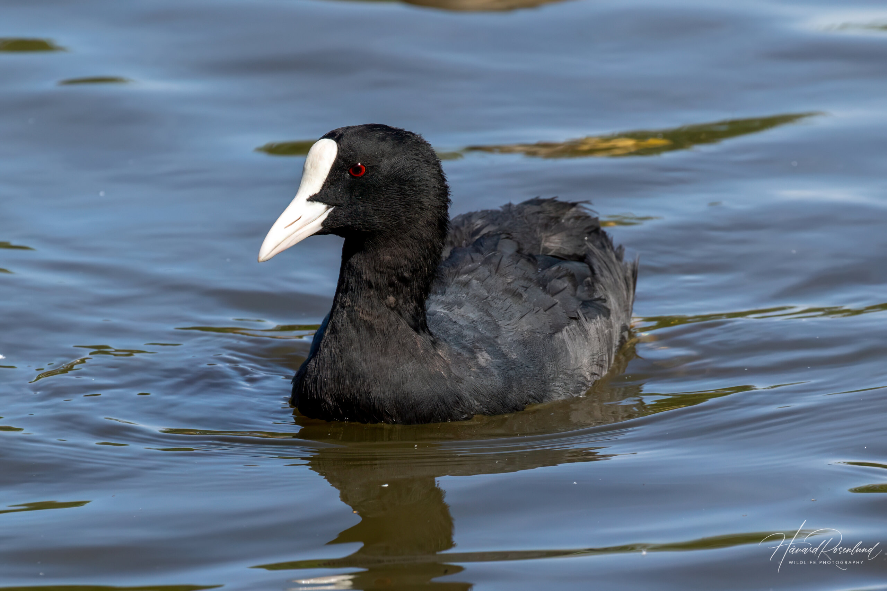

الغرّةEurasian Coot
Fulica atra
مستوطن ومهاجرResident & Migratory
تُعرف الغرّة علميًا باسم Fulica atra، وتنتمي إلى فصيلة الغلاليات (Rallidae) ضمن رتبة الغلالياويات (Gruiformes)، وهي طائر مائي مكتنز أسود اللون بالكامل تقريبًا، مع درقة أمامية بيضاء بارزة فوق منقار أبيض، وأصابع مفصّصة (وليست مكففة) تساعدها على السباحة الجيدة والغطس. هذا الطائر مستوطن ومهاجر في آن (R/M) في العراق، إذ توجد مجموعات مقيمة تتكاثر في الأهوار، بينما تفد إليه أعداد ضخمة إضافية مهاجرة شتاءً من شمال أوراسيا لتشكل تجمعات كثيفة على البحيرات والمسطحات المائية الواسعة.
The Eurasian Coot is scientifically known as Fulica atra, belonging to the rail family (Rallidae) within the order Gruiformes. It is a stocky waterbird almost entirely black, with a prominent white frontal shield above a white bill, and lobed (rather than webbed) toes that aid in good swimming and diving. This bird is both resident and migratory (R/M) in Iraq, with resident populations breeding in the marshes, while huge additional migratory numbers arrive in winter from northern Eurasia, forming dense gatherings on lakes and wide water bodies.
تصنَّف الغرّة ضمن الأنواع غير المهددة (Least Concern) وفق الاتحاد الدولي لحفظ الطبيعة، بفضل انتشارها الواسع وأعدادها العالمية الكبيرة. وتسهم الغرّة في النظام البيئي العراقي عبر تغذيتها الكثيفة على النباتات المائية الغاطسة، ما يجعلها من أهم منظمات الغطاء النباتي المائي في الأهوار، كما تشكل أسرابها الشتوية الهائلة مصدر غذاء رئيسيًا لجوارح الأهوار، ويُعد حضورها بأعداد كبيرة مؤشرًا موثوقًا على غنى المسطحات المائية العراقية بالنباتات المائية.
The Eurasian Coot is classified as Least Concern by the IUCN, thanks to its wide distribution and large global population. It contributes to Iraq's ecosystem through intensive feeding on submerged aquatic plants, making it one of the most important regulators of aquatic vegetation in the marshes, while its enormous winter flocks form a primary food source for marsh raptors, and its presence in large numbers is a reliable indicator of the richness of Iraq's water bodies in aquatic plants.